for Fiona
Fiona the Hippo
Sad news from Cincinnati — Fiona the hippo has passed away, and Louie shared this photo in her memory.
Read the full tourLewis the Amur tiger, standing in the water at Cincinnati. He and his brother Clark are just one of the 1,062 species I've seen and photographed since I started this page in 2020.
Photo by Louie — Lewis, Amur tiger, Cincinnati Zoo.
Clean original: no title or watermark on the photo itself.
The newest tours first — Louie's photos and Louie's words, the way they've always been posted. Tap any tour to read it on its own page.
64 tours · newest first
Sad news from Cincinnati — Fiona the hippo has passed away, and Louie shared this photo in her memory.
Read the full tour
A regular walk at Columbus, helping my friend Josh Young with photos — twenty animals along the way, from an Amur tiger to a pair of tawny frogmouths.
Read the full tour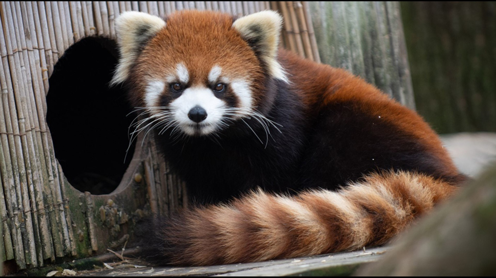
Asia Quest has been my favourite corner of Columbus Zoo for twenty years — I first walked it in 2006, the year it opened, and I went back to mark the anniversary.
Read the full tour
The memorial to Martha, the last passenger pigeon, in Cincinnati's historic pagoda aviary — her statue outside, and inside, the story of a species gone in a hundred years.
Read the full tour
A Halloween visit to Cincinnati — a giant spider over the entrance, pumpkins for enrichment, and twenty animals from a Malayan tiger to leaf-cutter ants.
Read the full tour
New species unlocked — Boo, a pileated gibbon at Cincinnati, cream-coloured fur and a dark face, watching from the branches.
Read the full tour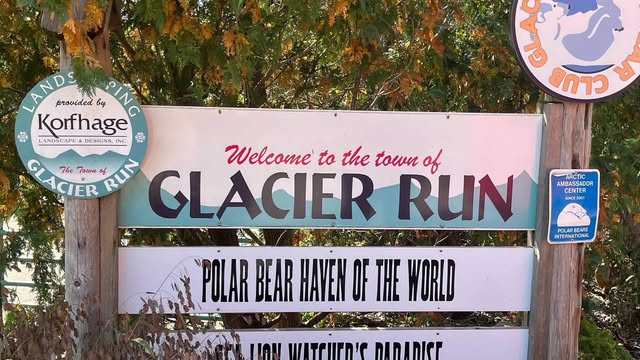
Glacier Run, the polar bear haven — a town reclaimed by wildlife, with polar and grizzly bears, a grey seal, sea lions and a snowy owl.
Read the full tour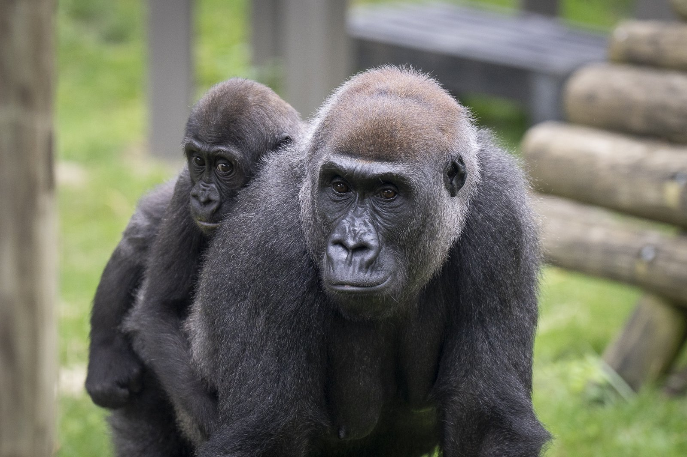
A short stop under the Gorilla Forest sign — a pygmy hippo, and a western lowland gorilla behind the mesh, looking straight at the camera.
Read the full tour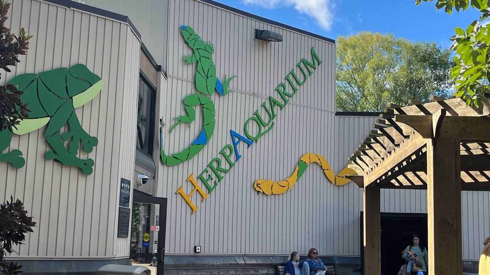
Eighteen reptiles and amphibians in Louisville's HerpAquarium — a panther chameleon, an albino alligator, a Gaboon viper, and frogs, geckos and snakes all the way through.
Read the full tour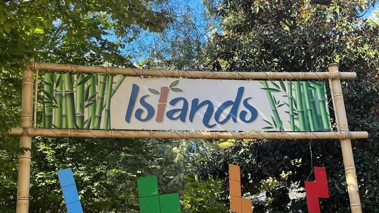
Twenty island animals at Louisville — little blue penguins, a Sumatran tiger, an orangutan, Rodrigues flying foxes and a Komodo dragon.
Read the full tour
Amur tiger cubs Frankie, Mira and Masha with their parents Victoria and Timmy in the Tiger Taiga — then over the pass to the snow leopards.
Read the full tour
Adventure Cove is the zoo's home for its ambassador animals — sea lions in the lagoons, and around fifty species side by side in the Animal Encounters Village.
Read the full tour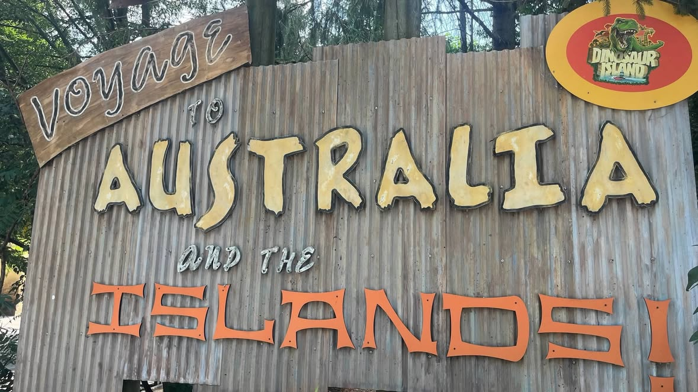
Down the Voyage to Australia and the Islands — a Queensland koala, a Tasmanian devil, a kangaroo, an orangutan and a Komodo dragon.
Read the full tour
Into the Congo Expedition — gorillas and bonobos, a leopard, a mandrill, an okapi, and a forest full of African birds.
Read the full tour
The after-dark animals first — a kiwi, a wombat, a tree kangaroo and a slow loris — then the aviary birds, from a Nicobar pigeon to an eastern rosella.
Read the full tour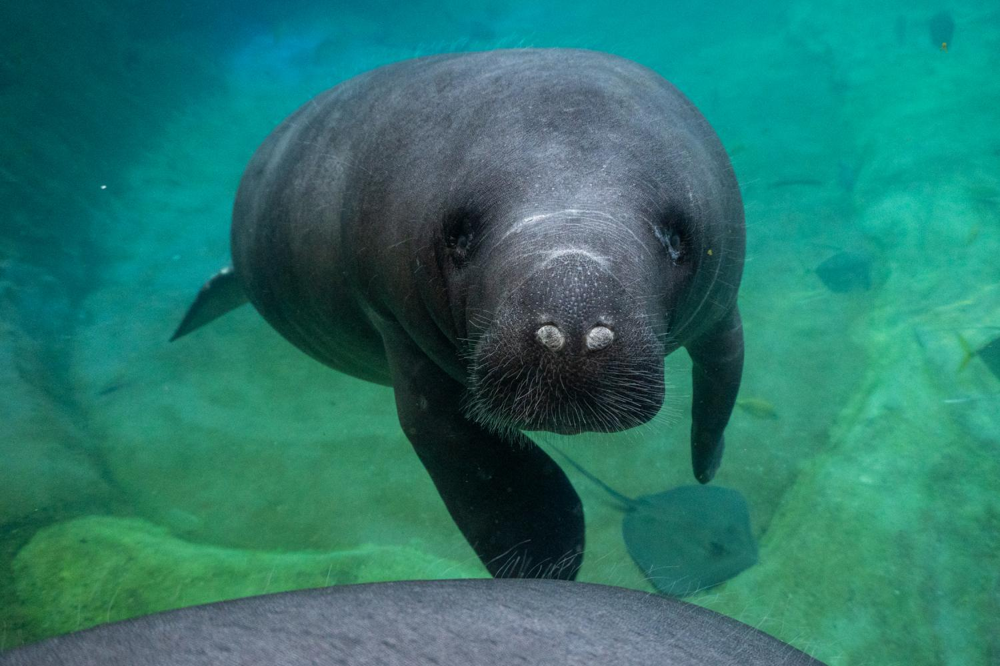
Through the tunnel to the water side of the zoo — flamingos, Discovery Reef, penguins, alligators, and my favourite stop in the Shores, the Manatee Centre.
Read the full tour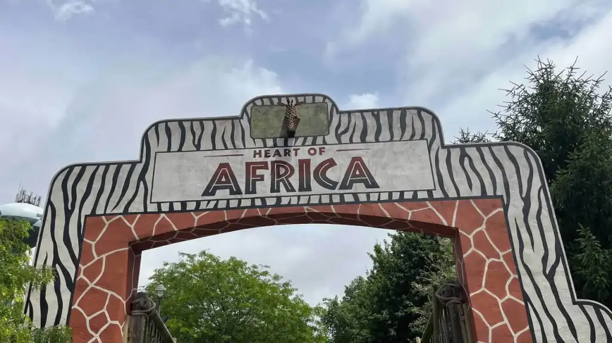
Forty-three acres, opened in 2014, and some of the best habitats in the country — lions up front, and giraffes and zebras out across the grass.
Read the full tour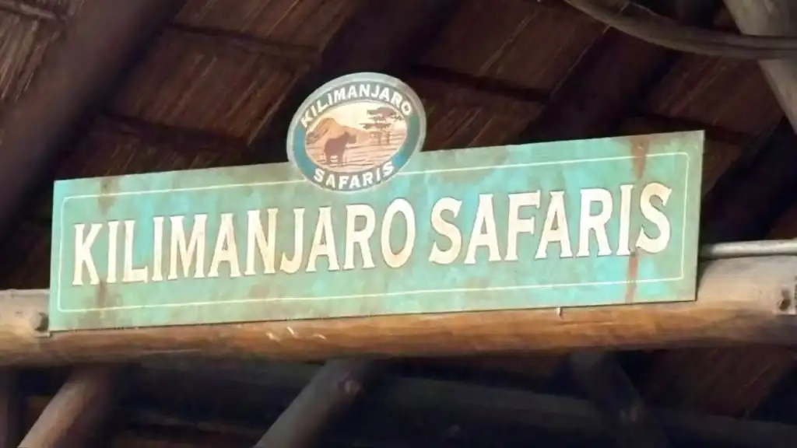
The road trip tour. I rode the safari that's been running since the park opened in 1998 — okapi and black rhinos, hippos and crocodiles, painted dogs and elephants.
Read the full tour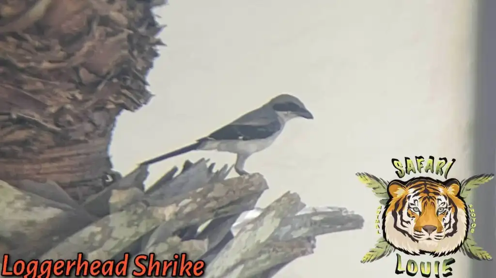
Home from Florida with creatures from multiple habitats, including this loggerhead shrike on a palm trunk.
Read the full tour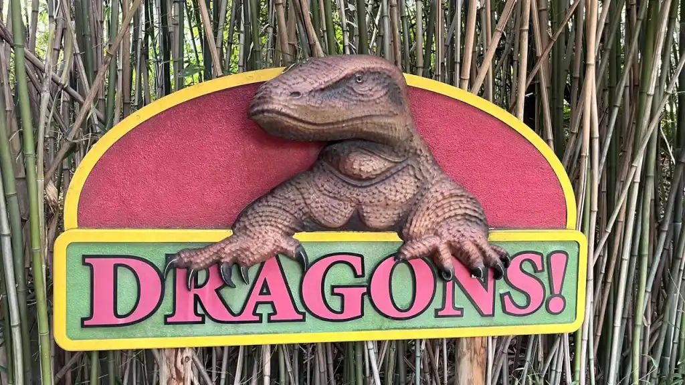
Downhill from World of the Insect, the lookout that began as a baboon home now belongs to the ring-tailed lemurs — I pair it with the Dragons building, the way the path does.
Read the full tour
A two-and-a-half-acre primate rainforest where walking it, you feel like you've left Ohio entirely — gibbons calling overhead, and one of the best bonobo habitats I've seen.
Read the full tour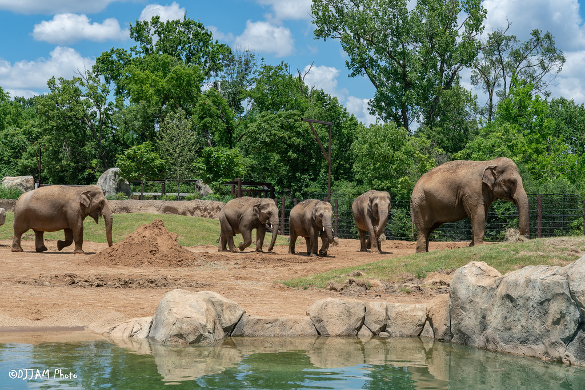
Elephant Trek is now the best Asian elephant complex I have ever seen — the elephants went from 25,000 square feet to nearly three and a half acres.
Read the full tour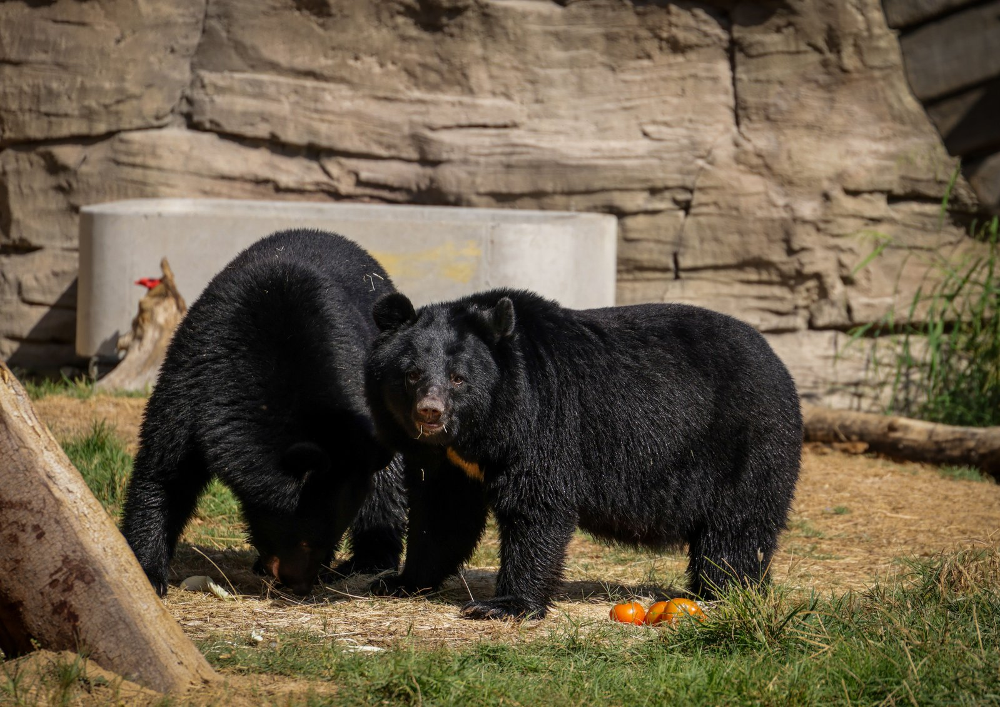
An early-summer Cincinnati walk — the bears and the sea otters, in one tour.
Read the full tour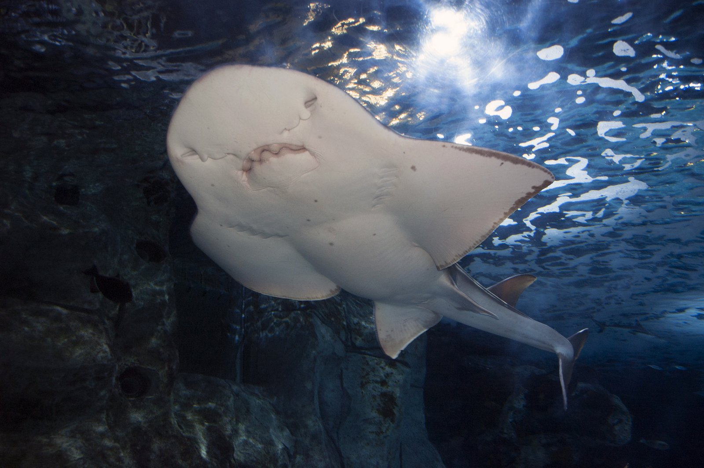
The whole aquarium in one walk, across the river in Kentucky — shark rays, white alligators, the frog bog, and the penguin palooza.
Read the full tour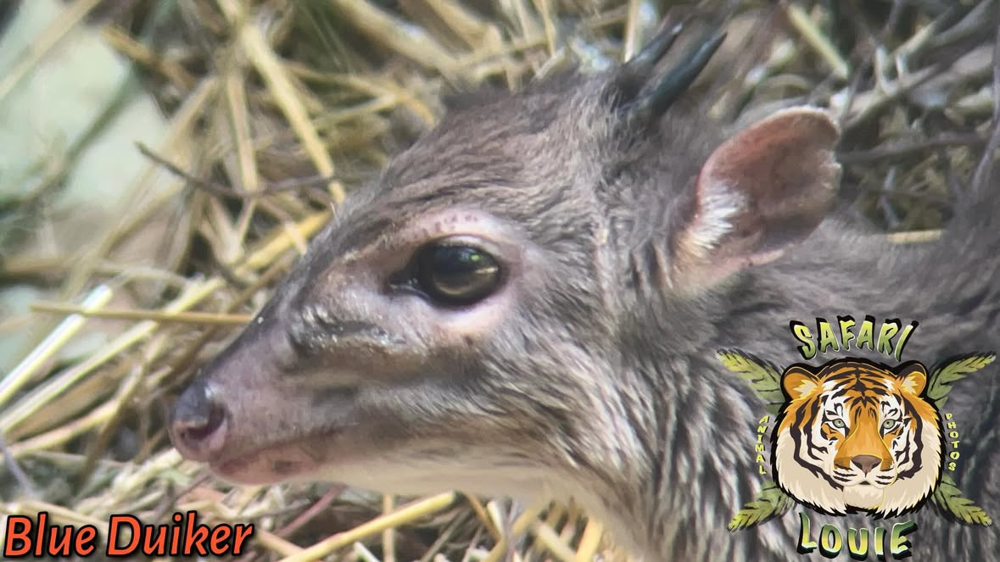
A beautiful weekend back at Cincinnati, thanks to my friend Josh Young, who won the tickets — twenty photos from the trip, starting with a blue duiker.
Read the full tour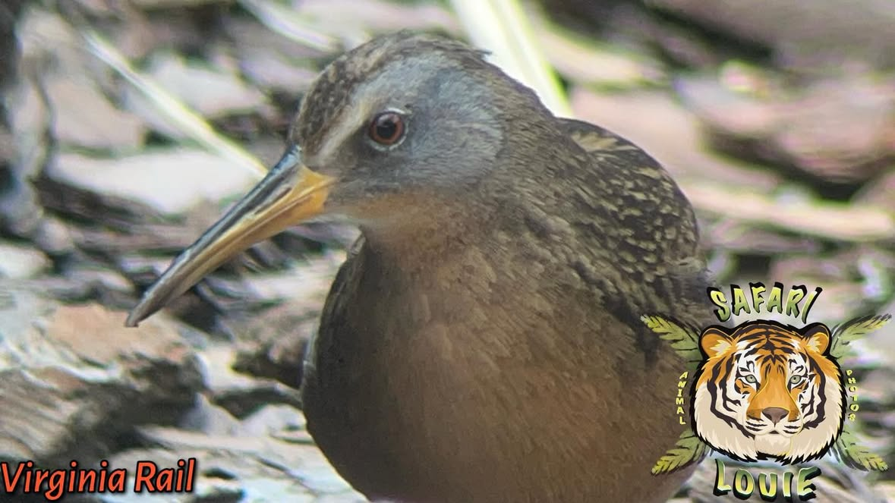
It's been a crazy week, so I went to see the animals in my two favourite regions of Columbus — North America and Asia Quest. Ten photos, starting with a Virginia rail.
Read the full tour
For all my fellow birders, you're in luck — some Ohio native birds I've taken this month and added to my animal collection. Twelve photos, led by this Swainson's Thrush.
Read the full tour
For Earth Day 2026 I featured Lewis the Amur tiger — he and his brother Clark are just one of over 850 species I've photographed since I started the page in 2020.
Read the full tour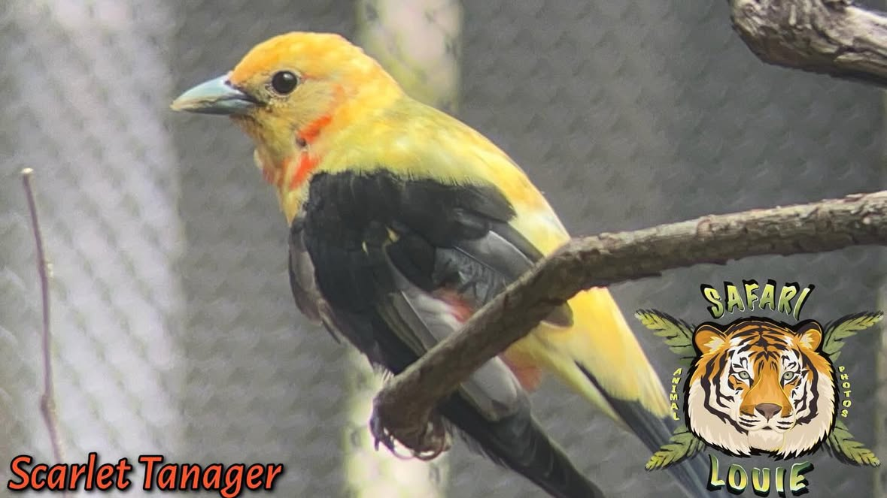
Instead of spring cleaning, how about some spring photo shooting — and luckily I got what I wanted! Ten photos, led by a scarlet tanager.
Read the full tour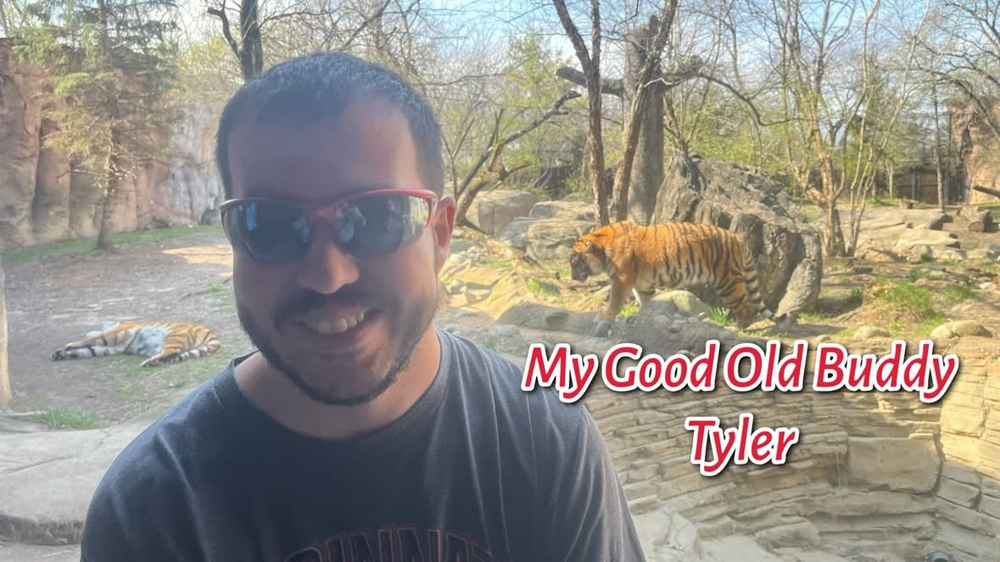
My friend Tyler requested a HomeTown Safari, and I delivered — a day of funny and cool moments, including Tyler meeting Lewis & Clark, the Amur tiger brothers, for the very first time.
Read the full tour
As part of my birthday weekend, my safari buddy and I returned for another view of Amur tiger brothers Lewis & Clark — a beautiful day with good temperatures, and the visit was worth it.
Read the full tour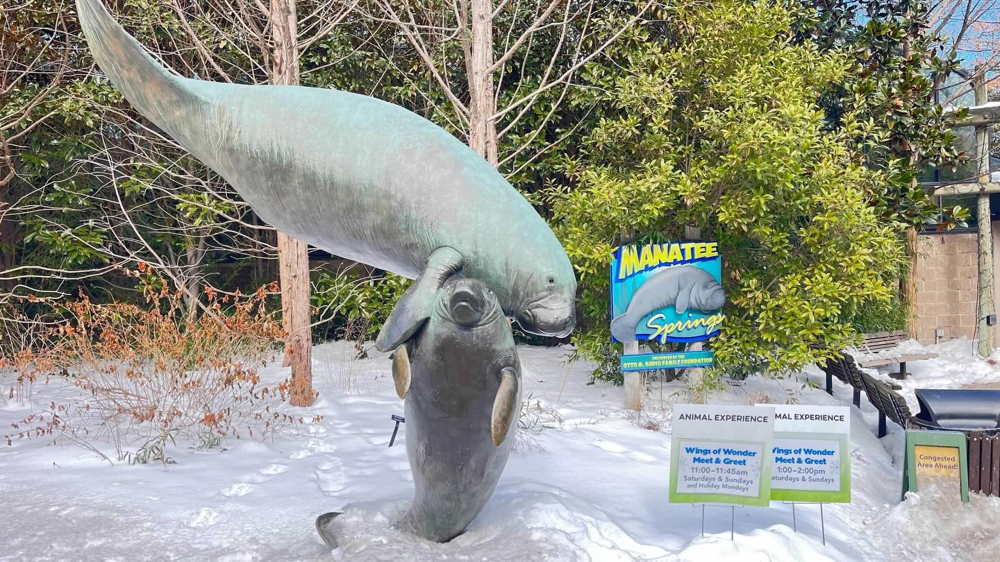
The glass building that feels like Florida — it was the zoo's aquarium for nearly 50 years, and after a fire stopped its renovation, it reopened in 1999 as Manatee Springs, home to Florida manatees and alligator gars.
Read the full tour
The very first major, permanent insect house at an American zoo, opened in 1978 — eight sections from What is an Insect to the leaf-cutter ants, ending at a walk-through butterfly aviary.
Read the full tour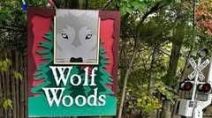
Wolf Woods began in 2005 as part of an extension of Otter Creek — surprisingly the least-visited area in the zoo, and one I can help you find your way around.
Read the full tour
Africa started as a simple parking lot — Giraffe Ridge came first in 2008, and by 2016 the eight acres held lions John & Imani, the cheetah run, Painted Dog Valley and Hippo Cove, home to Bibi, Tucker, Fritz and Fiona.
Read the full tour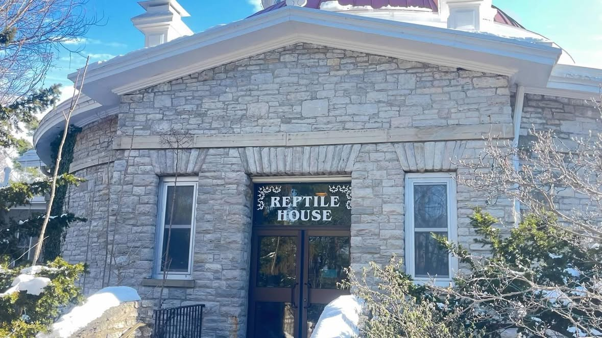
One of the zoo's first buildings — the Monkey House of 1875 became the Reptile House in 1953, when the reptiles moved over from the building that is now Wings of the World.
Read the full tour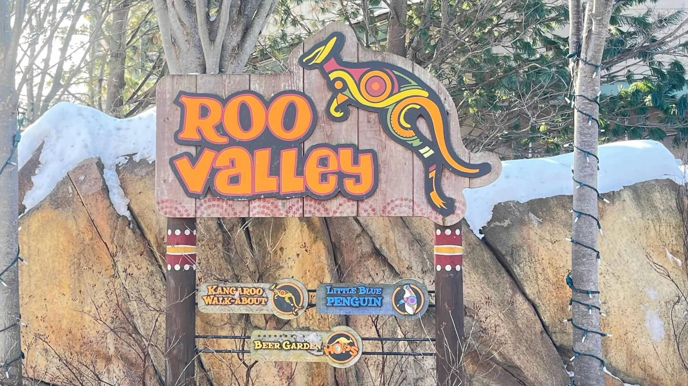
Down the hill from Eagle Eyrie into Roo Valley, opened in August 2020 — walk in with the red and western grey kangaroos, then through to the little blue penguins, sharing their beach with three kinds of ducks.
Read the full tour
Opened in 1970, the Eyrie's 170-foot flight cage was once the largest in North America — home to Andean condors, bred for release since 1989, and Steller's sea eagles, which Cincinnati was the first to breed successfully.
Read the full tour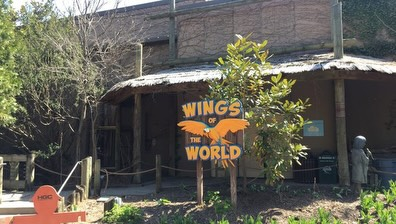
The 1936 reptile house became a bird house, renovated in 1996 — walk-through aviaries for South America and Oceania, a keel-billed toucan where the hornbills were, puffins and three penguin species, and one of the largest flocks of kea in North America.
Read the full tour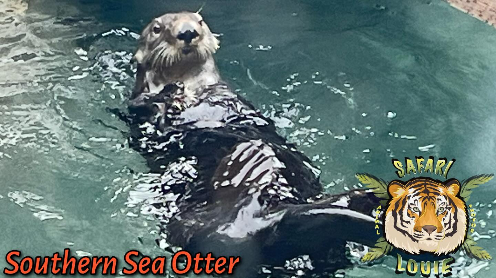
My buddy Josh and I returned to the Queen City for our first wild adventure for 2026 — a little chilly outside, but a wonderful decision, with some pretty active animals and some new species in my collection.
Read the full tour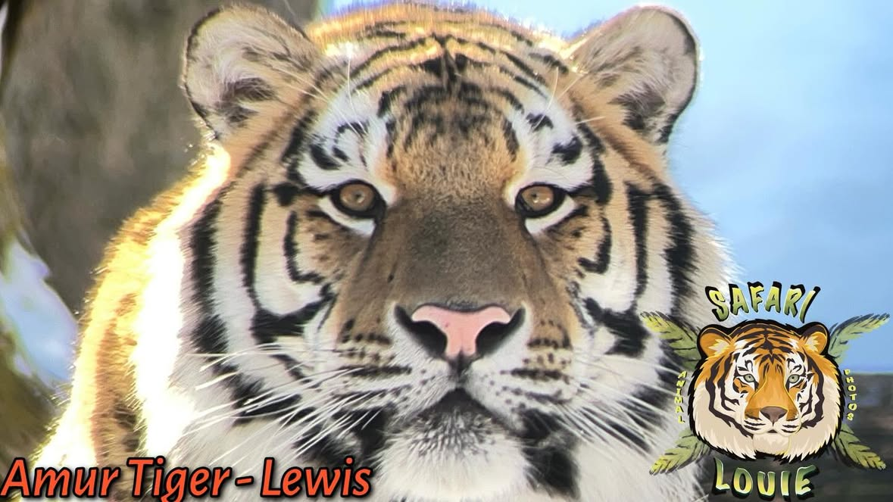
Over the weekend I had two wild days, starting with Amur tiger brothers Lewis & Clark, who had recently arrived at the Columbus Zoo — their new expedition there is off to a great start.
Read the full tour
This year my Safari Crew & I have traveled to 5 AZA Zoological Facilities — not a lot of trips this year, but it was still amazing, and once again it is gonna be wild in 2026.
Read the full tour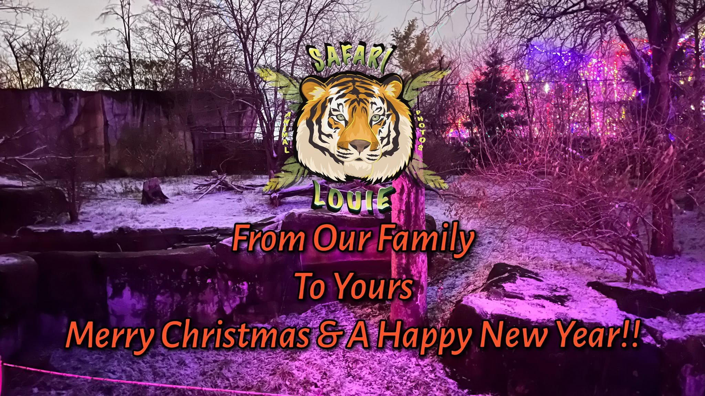
Once Again It’s that time of year, so from our Safari Family To Yours, We Wish You A Merry Christmas & A Happy New Year!!
Read the full tour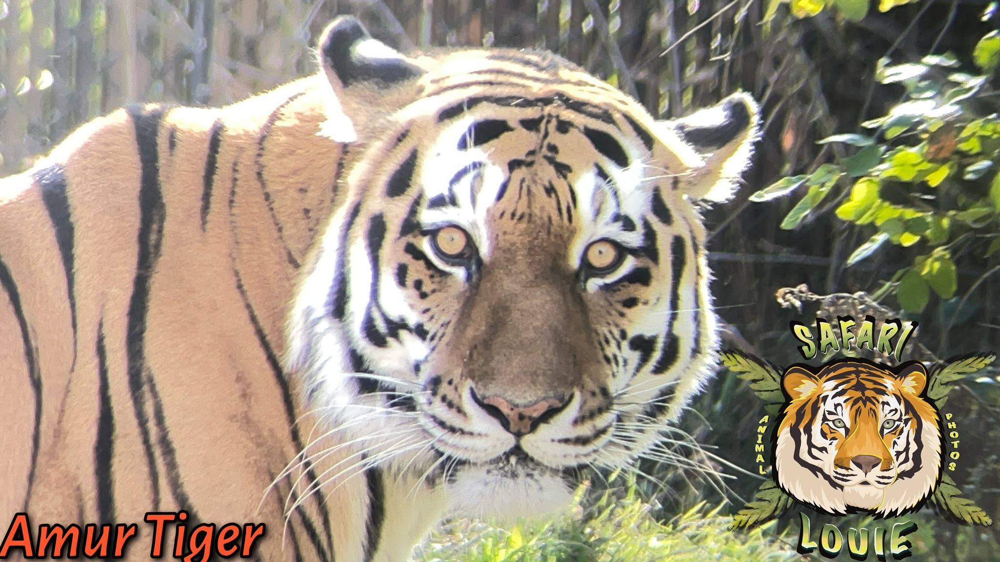
I wanted to walk around on one of the very last warm days for 2025 and got lucky getting some perfect shots, including Diesel the Tiger & my first encounter of the ( Extinct in the Wild ) Socorro Dove — I just love to Photograph New Animal Species!!
Read the full tour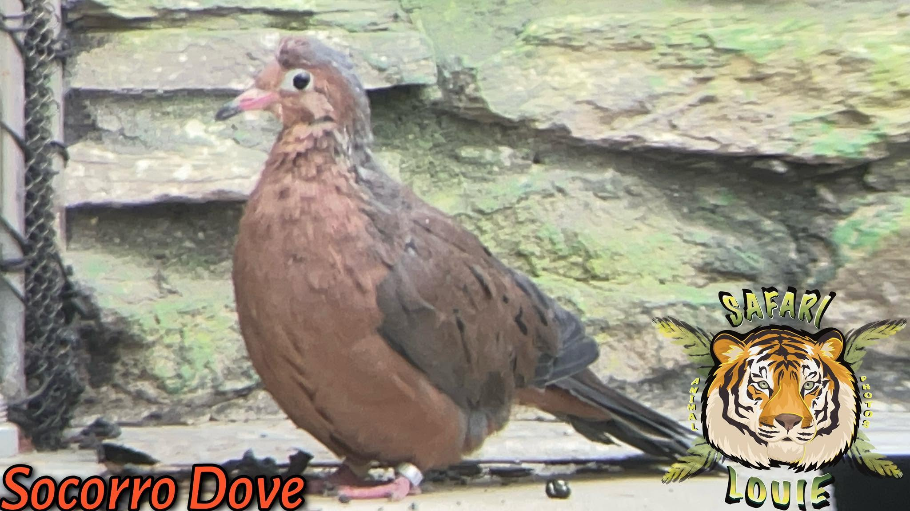
NEW SPECIES!! This is the Socorro Dove ( Zenaida graysoni ) — extinct in the wild, but there is hope for them in zoos. This is why zoo’s are important.
Read the full tour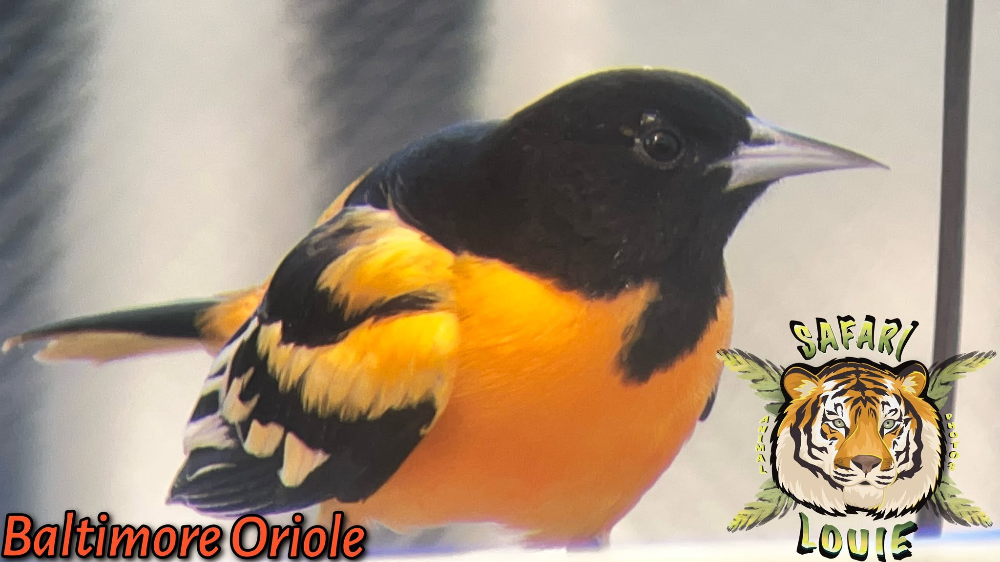
Before clocking in and took the plane to Africa, I had some time to walk around to see some new species of birds from me and some cute newcomers along with some recognizable residence!!
Read the full tour
Cat Canyon grew out of the old Tiger & Lion Grottos from the early 1930's — today it is home to mountain lion brothers Tecumseh & Joseph, Malayan tigers Zero & Jin, an Eurasian eagle-owl, and snow leopards Renji & Nubo.
Read the full tour
Photo Tours #11 — even though this is really a Reptile House, I called it Herpetarium mainly cause well there are Amphibians in the Building as well. This has to be one of the Biggest reptile collections i've ever seen.
Read the full tour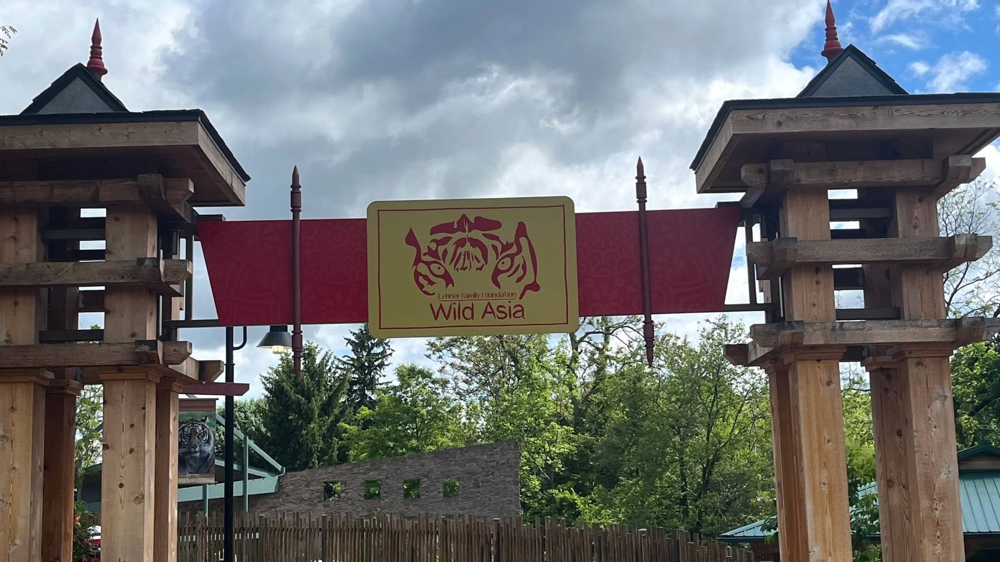
Photo Tours #10, Wild Asia-Akron Zoo, Opened on May 29th 2021 of a 2 part capital project along with Pride of Africa which opened back in 2019, Wild Asia replaced the former grounds of the Tiger Valley & Asia Trail which closed in 2018.
Read the full tour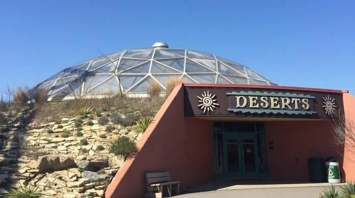
Photo Tours #9, Deserts-Indianapolis Zoo, Added as part of the opening of the new location for the Indianapolis zoo back in 1988, The Deserts building is 1 of 3 Desert Domes in the United States and this one is considered the oldest of Americas Desert Domes.
Read the full tour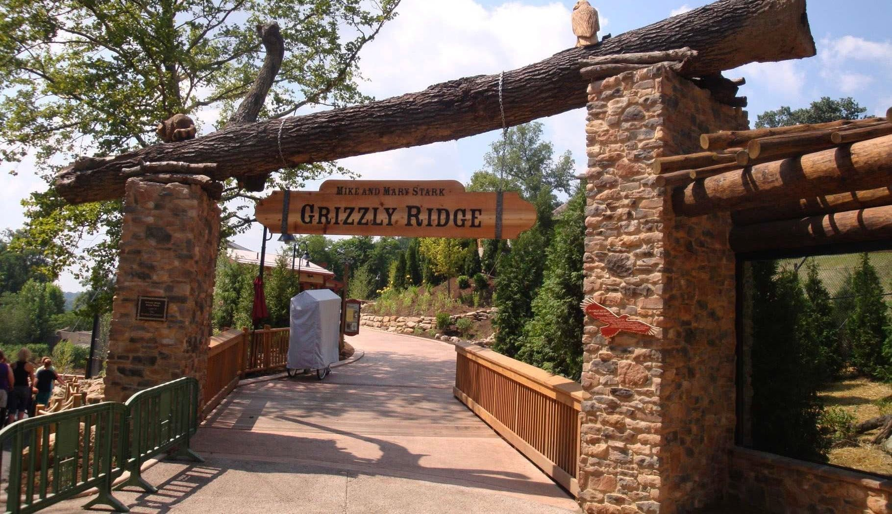
Photo Tours #8, Grizzly Ridge-Akron Zoo, The $12 Million Build that is containing 3 acres opened in 2013 that replaced much of the still existing Wild Prairie section, this section is not only displaying animals in America but mainly the animals of the Past & Present that lived in Ohio.
Read the full tour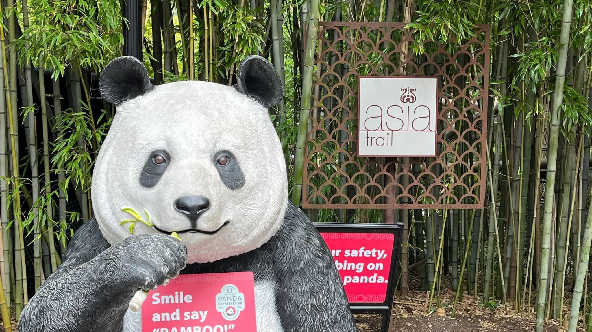
Photo Tours is Back with Tour #7, Asia Trail-Smithsonian National Zoo. Opened back in October of 2006 as part of the zoo's 10 year renovation plan, it takes you to the dense forests of the world's largest continent and containing some of the world's gems of the forest.
Read the full tour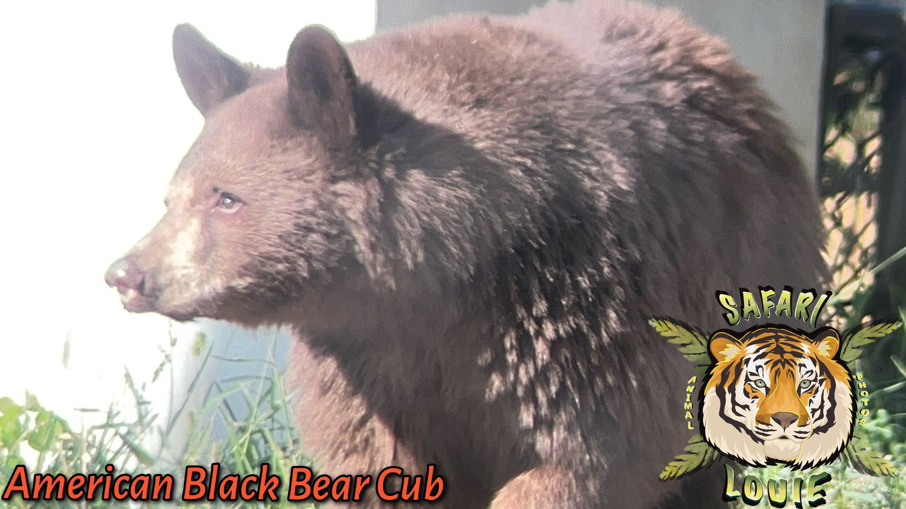
It was a very busy first weekend of Boo at the Zoo for me both working at it and photographing some animal species that I may haven't featured before including my first few walkthroughs of the New North America Trek Aviary!!
Read the full tour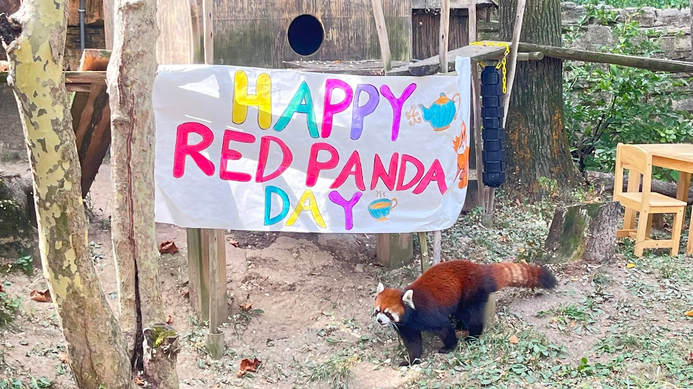
It's been a tough few weeks lately but today I was happy to walk around for Red Panda Day!!!
Read the full tour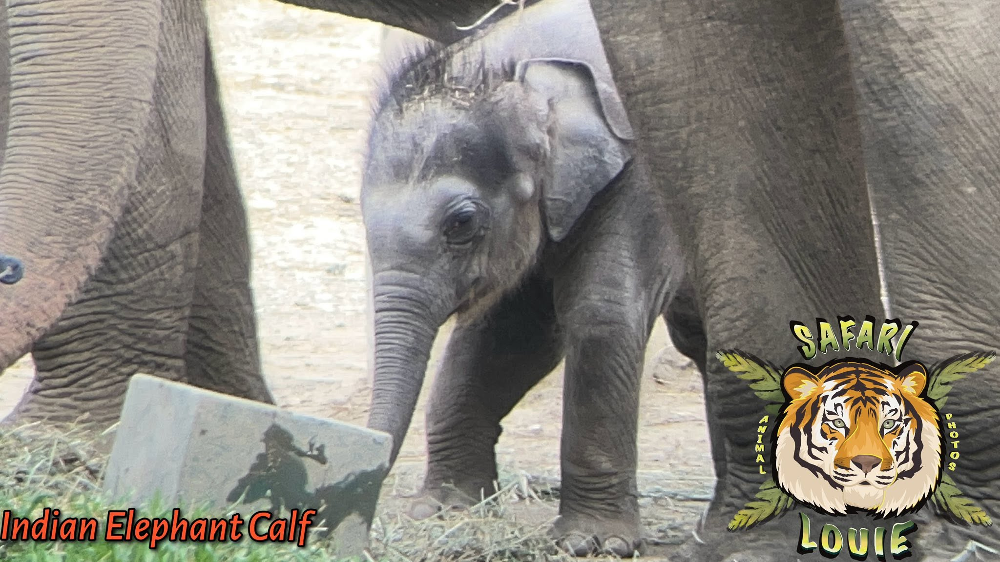
After our open-air safari at The Wilds, we decided to stay at Cbus Zoo for the remaining regular day hours & the Lantern Festival that Night and yes the whole day yesterday was truly wild.
Read the full tour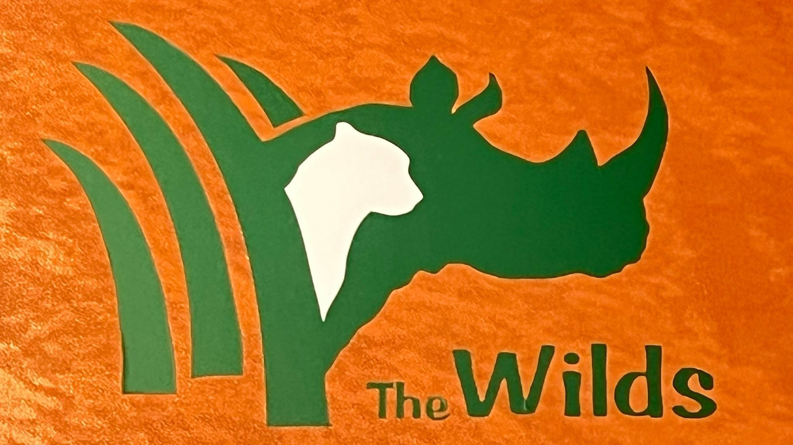
Well Folks after 3 Years since our last Safari Tour in Ohio, Me & My Zoo Buddy made a Return for Beautiful Morning Safari at The Wilds in Cumberland Ohio, If you haven't been or heard the Story of The Wilds, then it is time for a history lesson.
Read the full tour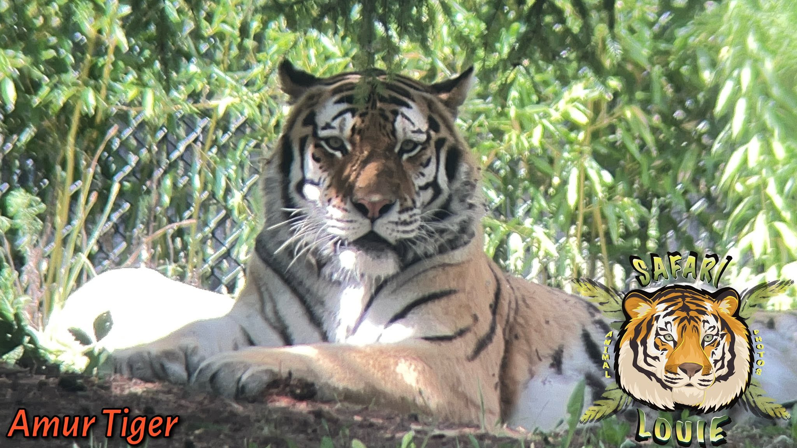
Me & My Folks had a Wonderful Time at the Detroit Zoo, The Detroit Zoo opened on August 1st 1928 and in this 125 Acre Zoo, it is home to over 2,000 animals representing 200 Species.
Read the full tour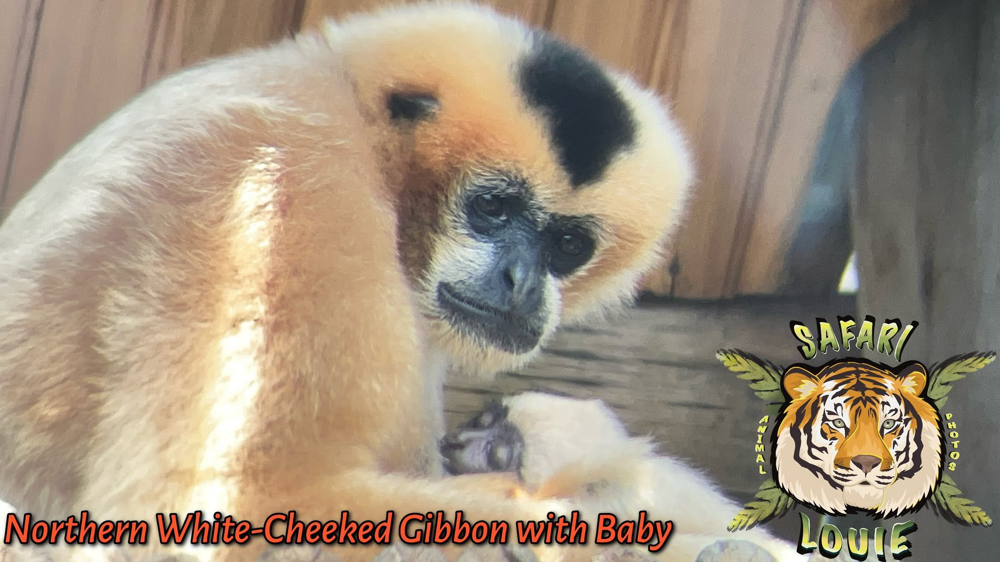
My Co-Worker/Friend Emily invited me a trip to the Akron Zoo and I couldn’t say No, it was beautiful day for a nice hike & at the end for me, I had to see a popular resident ( for me lol ) in Columbus before calling it for the Day!!
Read the full tour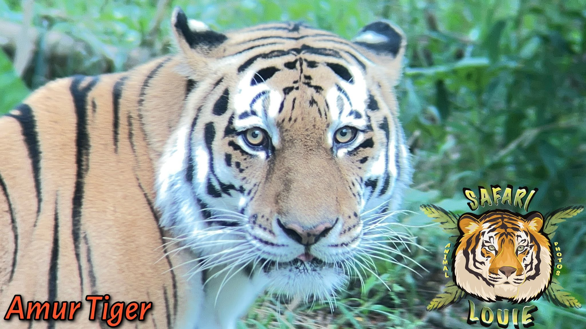
From my return from the South, I decided to pay a visit to see some wonderful friends at work and go for a walk to see the animals including the Tigers for International Tiger Day!!
Read the full tour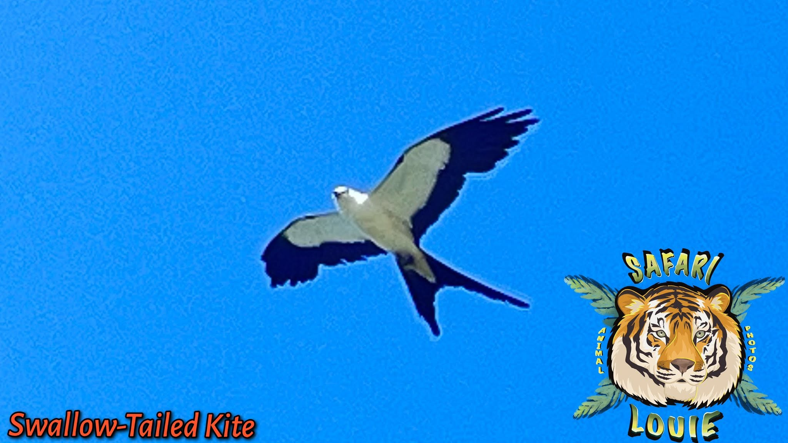
While on Vacation in St.Augustine Florida & On the Islands of the Caribbean, I managed to snap some very lucky shots of a lot of Animals I’ve been wanting to see & Photograph!!
Read the full tour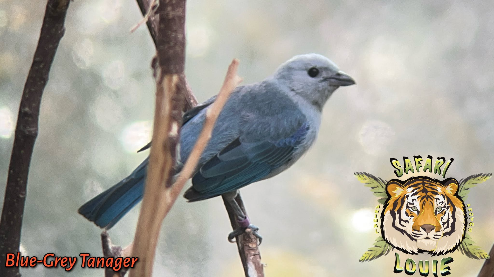
Back from the Queen City to see the New Elephant Trek ( hardly any animals were out in the trek to post ) but I enjoyed seeing & photographing new a couple new species of animals!!
Read the full tour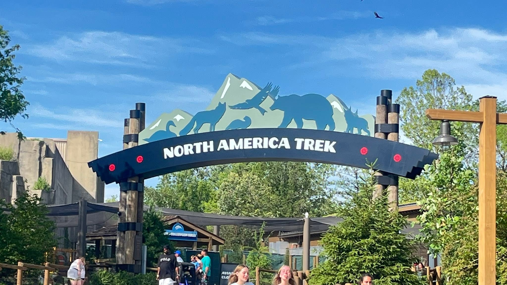
Ladies & Gentle, I would like to introduce you to Phase 1 of the new North America Trek which officially opened on June 20th, the new enclosures replaced the former Swan, Wolf, Bison/pronghorn & prairie dog enclosures to make new & better homes for a couple of residents
Read the full tour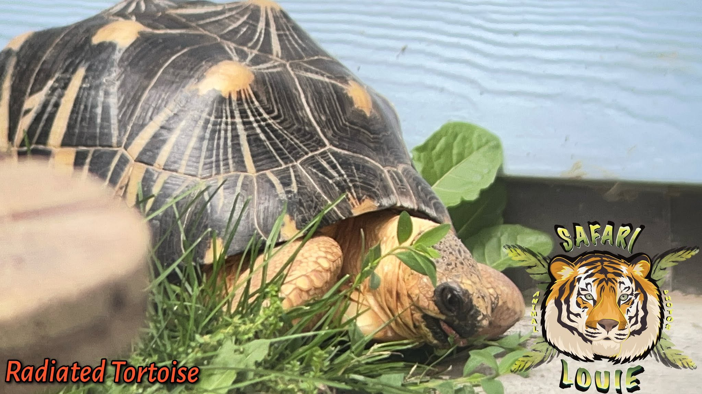
While having some family from Texas paying a visit, they wanted to take at the zoo and after words, take a dip in Zoombezi Bay!!
Read the full tour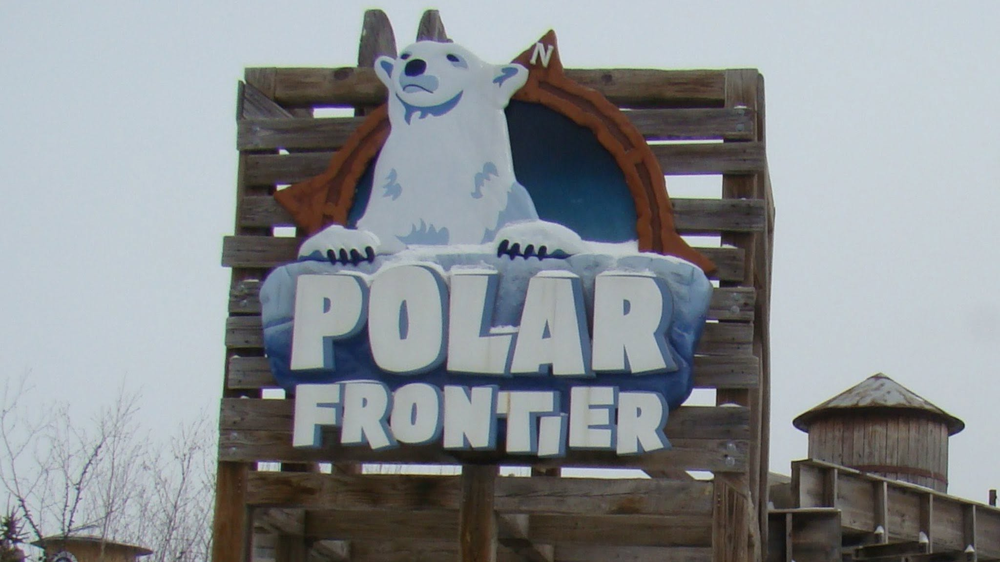
Photo Tours #6, Polar Frontier-Columbus Zoo & Aquarium. In 2010, Columbus Zoo opened to a extension to the former North America Region ( Now Called North America Trek & Opening in Late June, 2025 ) today this 5 Acre Grassy & Forested Tundra is home to 3 Species
Read the full tourPick a zoo and the tours above filter to it — same filter, just one tap away.
“This year my Safari Crew & I have traveled to 5 AZA Zoological Facilities — not a lot of trips this year, but it was still amazing, and once again it is gonna be wild in 2026.”
Louie has been photographing zoo and aquarium animals since 2020 — 1,062 species seen and photographed so far, one photo tour at a time, in his own words alongside every photo.
About Louie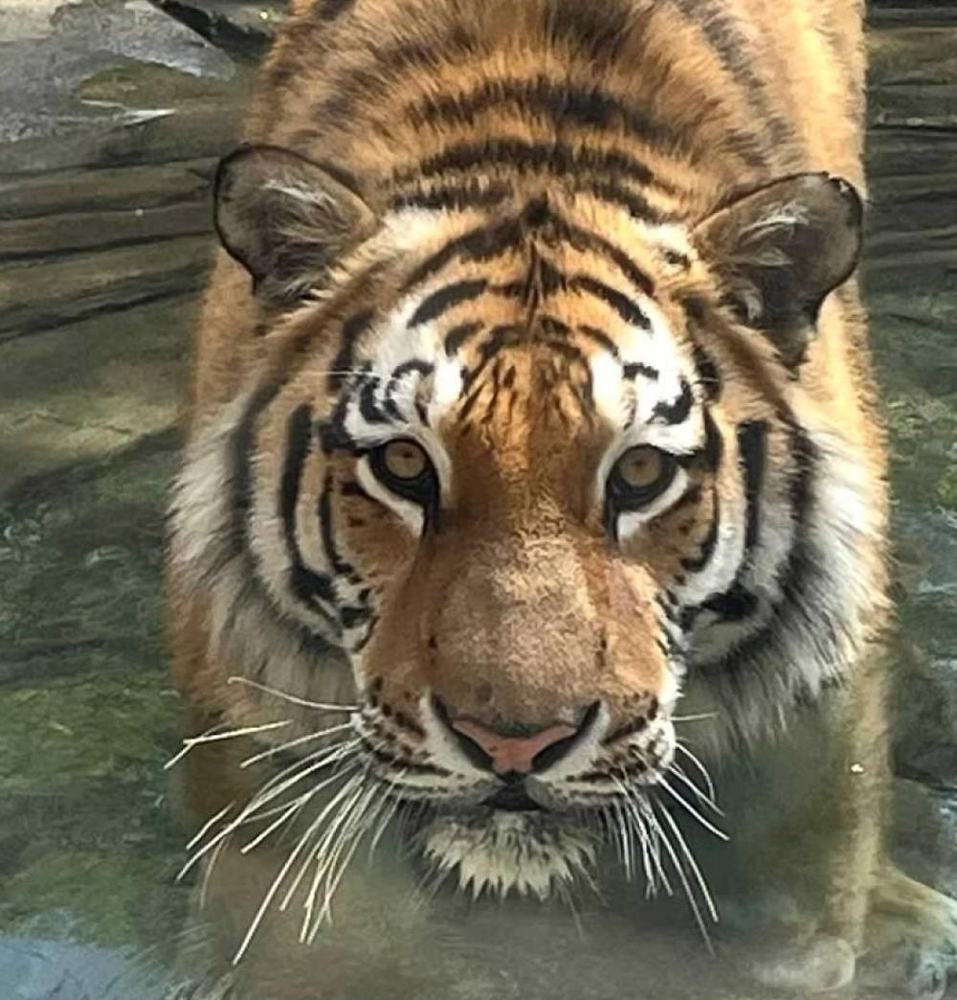
This is the photo up top, the way Louie took it — Lewis standing in the water, looking straight down the lens. No title across the bottom, no watermark. Just the tiger.
Louie featured Lewis for Earth Day at Cincinnati, met the brothers again on his birthday weekend, and caught them settling in after they arrived at Columbus: “their new expedition there is off to a great start.”
Louie Eigensee — the man behind the camera
Safari Louie is Louie Eigensee's home for the animal photo tours he has been posting since 2020. Louie has seen and photographed 1,062 species — mammals, birds, reptiles and amphibians — and every tour here is told in his photos and his words: the habitats, the animals, and what makes each one worth the walk. Regular stops include Asia Quest, Heart of Africa and Congo Expedition at the Columbus Zoo; Elephant Trek, Jungle Trails and Hippo Cove at the Cincinnati Zoo; Glacier Run and the HerpAquarium at the Louisville Zoo; the whole Newport Aquarium in Kentucky; and Kilimanjaro Safaris at Disney's Animal Kingdom in Florida.
New tours are posted first on the Safari Louie Facebook page and added here newest first. Looking for a particular animal? Head back to the photo tours and use the zoo filter at the top — Fiona the hippo, the red pandas of Asia Quest, Lewis & Clark the Amur tigers, the manatees of Manatee Springs and the Socorro dove are all in there.
← Back to the photo tours